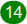

Showing programs
The Programs screen normally shows one bank of programs, as an array of fifty buttons. Each button shows a program number, and if that program exists and has a name, shows the name as well. If a particular numbered program doesn’t exist, its button is gray.
If a stored program matches the current program, its button is tinted light green. If its number matches, but its contents don’t, it is tinted pink instead.
This happens as soon as you begin to edit the current program. It also can happen if you use the Programs screen to modify the stored program.
To show a different bank, click one of the bank numbers at the top. To show the current bank (the bank containing the current program) again, you can either click its number at the top, or the current button.
The difference between the two is that when current is selected, and you select a program in another bank from the Chroma’s control panel, the Programs screen automatically switches to that bank. There is also a difference when you set up a link.
There are also some indicators that can appear in program buttons:
 appears if
the stored program contains a link, and shows what program it
links to. A 1- or 2-digit number implicitly refers to the same bank; a
3-digit number refers to a specific bank.
appears if
the stored program contains a link, and shows what program it
links to. A 1- or 2-digit number implicitly refers to the same bank; a
3-digit number refers to a specific bank.
 appears if the stored program contains a sequence program parameter, and shows what program it refers to.
 means that the
program is linked to by the currently selected program.
means that the
program is linked to by the currently selected program.
 means that the
program is the “sequence program” of the current program, so it
will be selected next if the sequence program footswitch is pressed.
means that the
program is the “sequence program” of the current program, so it
will be selected next if the sequence program footswitch is pressed.